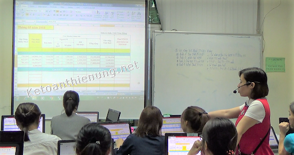

Học kế toán ở đâu tốt nhất TPHCM - Hà Nội? Nên học kế toán thực hành ở đâu tốt Hà Nội - TPHCM? Học kế toán tổng hợp ở đâu tốt, học kế toán thuế ở đâu uy tín? Học ở đâu thì làm được việc kế toán?... Đó là câu hỏi của nhiều bạn đang muốn học để làm kế toán.
Tại Hà Nội và TPHCM hiện nay có rất nhiều Công ty, Trung tâm đào tạo kế toán thực hành. Nhưng để tìm được 1 địa chỉ học kế toán tốt nhất thì không phải là điều dễ dàng chút nào. Vì mỗi công ty lại có những phương pháp, hình thức đào tạo khác nhau, học phí khác nhau và như vậy thì chất lượng cũng khác nhau.
=> Nhưng các bạn hãy yên tâm khi đến với Công ty kế toán Diệu Tâm.
-> Tại sao mình lại khẳng định học kế toán ở đâu tốt nhất Hà Nôi - TPHCM khi các bạn đến với Diệu Tâm, sau đây mình xin chỉ ra 1 số điểm để các bạn có thể tự đánh giá được:
- Khi tìm hiểu về 1 Trung tâm đào tạo kế toán thực hành, các bạn cần quan tâm tới 3 yếu tố chính như sau:
1. Hình thức, phương pháp đào tạo.
2. Đội ngũ giáo viên.
3. Giấy phép đào tạo.
I. Hình thức, phương pháp đào tạo:
- Tại Kế toán Diệu Tâm học viên sẽ được tư vấn và phân loại theo từng đối tượng, nhu cầu học, cụ thể như sau:
-------------------------------------------------------------------
- Hoặc bạn đã học kế toán nhưng quên hết (mất gốc) muốn ôn lại phần Nghiệp vụ kế toán ...
=> Thì các bạn học Khóa học Nguyên lý - Nghiệp vụ kế toán:
- Tìm hiểu Hệ thống tài khoản kế toán, sổ sách, báo cáo kế toán …
- Tìm hiểu những Luật Thuế - Luật kế toán mới nhất hiên hành.
- Cách định khoản, hạch toán các nghiệp vụ kinh tế phát sinh như: Mua hàng, bán hàng, xuất nhập kho, Lương, BHXH, TSCĐ, Công cụ dụng cụ, Doanh thu, chi phí, các bút toán kết chuyển cuối kỳ…
- Tìm hiểu quy trình làm sổ sách kế toán, lên Báo cáo tài chính …
Số buổi học: 9 buổi
Học phí: 1.100.000 (Giảm 20% Còn 900.000).
=> Thì bạn học Khóa học kế toán Thuế - Quyết toán thuế:
- Cập nhật các thông tư, luật thuế mới nhất hiện hành.
- Cách đăng ký thuế ban đầu, hóa đơn, đăng ký MST cá nhân, đăng ký người phụ thuộc …
- Thực hành viết hóa đơn, xử lý khi viết sai.
- Tính thuế, kê khai thuế GTGT, TNCN hàng tháng (Qúy), Báo cáo sử dụng hóa đơn, cách kê khai điều chỉnh bổ sung khi có sai sót.
- Cách xác định các khoản Chi phí được trừ, không được trừ.
- Cách lập Tờ khai quyết toán thuế TNCN, TNDN... Kỹ năng quyết toán thuế.
Số buổi học: 17 buổi.
Học phí: 2.000.000đ (Giảm 200.000đ Còn 1.800.000đ)
Chi tiết về nội dung khóa học, đối tượng học, học phí … xem tại đây nhé:
=> Thì bạn học Khóa học lên Báo cáo tài chính trên Excel:
- Thực hành hạch toán các nghiệp vụ vào sổ sách kế toán Excel như: Mua, bán hàng hóa, Lương, BHXH, tính khấu hao TSCĐ, phân bổ công cụ dụng cụ - chi phí trả trước.
- Dùng các hàm để lên các Sổ và Bảng như: Bảng nhập xuất tồn, Tổng hợp công nợ, Sổ cái, Sổ quỹ tiền mặt, tiền gửi ngân hàng ...
- Thực hành tính giá thành dịch vụ.
- Thực hành các bút toán kết chuyển cuối kỳ: Hạch toán tiền lương và khoản trích BHXH, phân bổ chi phí, trích khấu hao TSCĐ, kết chuyển thuế GTGT ...
- Thực hành lập Báo cáo tài chính, cách kiểm tra, đối chiếu sổ sách, đọc và phân tích Báo cáo tài chính...
Số buổi học: 10 buổi.
Học phí: 1.200.000đ (Giảm 200.000đ Còn 1.000.000đ).
Chi tiết về nội dung khóa học, đối tượng học, học phí … xem tại đây nhé:
4. Nếu bạn đã học về kế toán, muốn học thực hành lên sổ sách, lập Báo cáo tài chính trên phần mềm kế toán Misa (của loại hình Doanh nghiệp: Sản xuất).
=> Thì bạn học Khóa học phần mềm kế toán Misa
- Khóa học phần mềm Misa cũng có quy trình như khóa Excel bên trên -> Cũng hạch toán vào sổ sách, lương, BHXH, TSCĐ, Tính giá thành sản phẩm, kết chuyển … -> lên Báo cáo tài chính, cách kiểm tra, đối chiếu sổ sách, đọc và phân tích Báo cáo tài chính...
Số buổi học: 11 buổi.
Học phí: 1.300.000đ (Giảm 200.00đ Còn 1.100.000đ).
Chi tiết về nội dung khóa học, đối tượng học, học phí … xem tại đây nhé:
► Khóa học phần mềm kế toán Misa.
----------------------------------------------------------------------
5. Nếu bạn là người đã học kế toán, đang làm kế toán nội bộ (tức là biết định khoản, hạch toán rồi), muốn học để nâng cao, để kê khai thuế, lương, BHXH, học để lên được Báo cáo tài chính, Quyết toán thuế TNCN, TNDN ...
=> Thì bạn học Khóa học thực hành kế toán tổng hợp (Dành cho người đã học kế toán – Người biết định khoản, hạch toán)
-> Cụ thể là gồm 3 khóa nhỏ bên trên: Khóa thuế, Excel và Misa.
Số buổi học: 38 buổi.
Học phí: 4.000.000 (Chưa giảm, khuyến mãi chi tiết xem bên dưới)
Chi tiết về nội dung khóa học, đối tượng học, học phí … xem tại đây nhé:
------------------------------------------------------------------------------
6. Nếu bạn là người chưa học gì về kế toán (mới bắt đầu) hoặc người đã học nhưng quên hết (mất gốc), muốn học để làm Tổng hợp như: Tính thuế, kê khai thuế, lương, BHXH, làm sổ sách, lên Báo cáo tài chính, Quyết toán thuế TNCN, TNDN ...
=> Thì bạn học Khóa học kế toán cho người mới bắt đầu (Hoặc mất gốc)
-> Cụ thể là gồm 4 khóa nhỏ bên trên: Khóa Nguyên lý, Khóa thuế, Excel và Misa. (Nếu bạn đăng ký khóa 6 sẽ học hết các phần của khóa 5)
Số buổi học: 47 buổi.
Học phí: 5.000.000 (Chưa giảm, khuyến mãi chi tiết xem bên dưới)
=> Chi về nội dung khóa học, học phí khuyến mãi … xem tại đây nhé:
- Học thực hành, thực tế toàn bộ trên hóa đơn, chứng từ thực tế và các phần mềm kế toán, cụ thể:
-> Các bạn sẽ được phát cho 1 bộ hóa đơn, chứng từ thực tế, dựa vào đó giáo viên sẽ hướng dẫn các bạn cách xử lý các nghiệp vụ, kê khai thuế, lên sổ sách, lập Báo cáo tài chính trên phần mềm HTKK, EXCEL, MISA ...
-> Giáo viên sẽ hướng dẫn trên máy chiếu, học viên bên thực hành trên máy tính (máy tính đã được trung tâm kế toán Diệu Tâm trang bị đầy đủ).

(Hình ảnh lớp học kế toán thực tế tại Kế toán Diệu Tâm)
- Cam kết: Dạy đến khi bạn làm được việc mới thôi.
Ví dụ: Bạn đăng ký khóa kế toán thực hành tổng hợp (cho người đã học) thời gian là 28 buổi -> Bạn học xong mà vẫn chưa làm được việc, thì có thể đăng ký học lại mà không đóng thêm phí.
Ngoài ra: Trong quá trình học, hôm nào bạn có việc bận phải nghỉ chỉ cần liên hệ với Trung tâm để được sắp xếp lịch học bù, học lại buổi đó.
Không chỉ có thể, sau khi học xong các bạn sẽ được tư vấn và hỗ trợ giới thiệu việc làm, trong quá trình đi làm sau này có vướng mắc các bạn có thể gọi điện đến trung tâm để được hỗ trợ thêm. Được tặng các tài liệu hỗ trợ đi làm sau này (như các mẫu biểu, quy chế lương thưởng ...) , tặng phần mềm kế toán như: Excel, Misa, HTKK ...
- Thời gian học linh động tùy các bạn lựa chọn, một ngày có 3 ca:
Ca sáng 8h30 – 11h.
Ca Chiều: 14h – 16h30.
Ca Tối: 18h – 20h30.
- Một tuần học 3 buổi, 2 – 4 – 6 hoặc 3 – 5 – 7. Những bạn muốn học cấp tốc có thể học 1 tuần 6 buổi (học từ thứ 2 - thứ 7).
II. Đội ngũ Giáo viên giảng dạy:
- Giáo viên tại Kế toán Diệu Tâm là những kế toán tổng hợp, kế toán Trưởng đã nhiều năm kinh nghiệm thực tế.
-> Các bạn có thể tìm thấy thông tin đó tại: Tin tuyển dụng Giáo viên giảng dạy kế toán thực hành của Kế toán Diệu Tâm có yêu cầu rất cao, cụ thể là: Có kinh nghiệm làm kế toán thực tế từ 5 năm trở lên, nắm vững nghiệp vụ kế toán, Thuế.
- Trong từng buổi học, giáo viên sẽ đưa ra các tình huống thực tế mà kế toán và Doanh nghiệp thường gặp phải -> Để hướng dẫn các bạn xử lý những tình huống đó, chia sẽ những kỹ năng và kinh nghiệm khi xử lý tình huống đó.
-----------------------------------------------------------------
III. Giấy phép đào tạo kế toán thực hành:
- Có rất nhiều Trung tâm đào tạo kế toán tại Hà Nội và TPHCM không được cấp phép nhưng vẫn giảng dạy. -> Những Trung tâm nào được cấp phép sẽ cấp được Chứng chỉ (Không được cấp phép sẽ không thể cấp được Chứng chỉ, mà chỉ là Giấy chứng nhận do họ tự in).
- Kế toán Diệu Tâm được sự cấp phép của Tổng cục Dạy nghề (Tổng cục Giáo dục nghề nghiệp) thuộc Bộ Lao động - Thương Binh xã hội: Giấy phép dạy nghề - Đào tạo kế toán thực hành thực tế số 15/CNĐKHĐ-SLĐTBXH.
- Mẫu Chứng chỉ kế toán thực hành thực tế của Công ty kế toán Diệu Tâm:
.png "học chứng chỉ kế toán diệu tâm")
-----------------------------------------------------------------------
Học kế toán ở đâu tốt nhất Hà Nội - TPHCM.
Hotline: 0777.315.188 (Call or Zalo)
Email: ketoandieutam@gmail.com - Website: ketoandieutam.com
------------------------------------------------------------------------------------------------------------